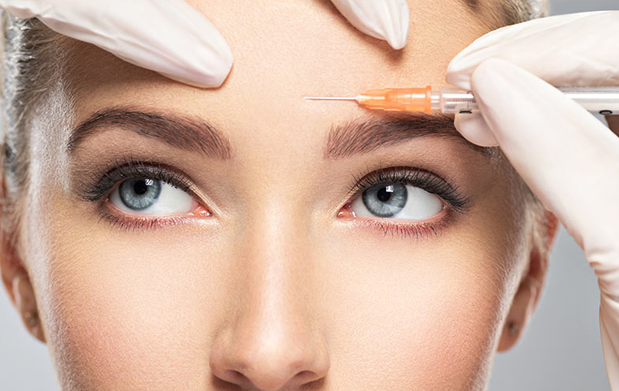

Fillings are used to restore damaged, broken or
decayed teeth. There are 2 types of filling materials used: Amalgam fillings or tooth colored
fillings.
Amalgam fillings are made from a mixture of metals. These fillings are extremely durable and have a
longer life span. Tooth colored or composite fillings are made from a resin. These are a natural
looking
alternative. These fillings can be made virtually undetectable.

Root Canal Treatment is required when the root of a tooth
is damaged or decayed and at risk of being infected. The treatment consists of removing the
infection
and restructuring the core of the tooth, helping to prevent the need for an extraction in the
future.
Crowns and Bridges :Dental crowns and bridges are
used to treat broken,cracked or missing teeth.Crowns are small porcelain caps placed on top of teeth
helping rebuild their shape ensuring strength and security.Bridges are used in a similar way but
secure
multiple broken or missing teeth instead.Both treatments are reliable,strong and extremely long
lasting and affordable.
Who is the Damon treatment suitable for? The Damon
System may be just what you are looking for if any of the following apply to you: You are unhappy
with
the appearance of more than just a few teeth at the front of your mouth You need a full brace, but
want
one that works more quickly than conventional treatments You want to avoid potentially invasive
treatments like crowns and veneers You have had orthodontic treatment in the past that is now
relapsing
The Damon System Using the Damon Braces system for full teeth straightening you can now have an
improved
smile in far less time and with far fewer visits to the dentist than for conventional dental brace
treatments. The Damon system is up to six months faster, whilst comfortable, and works for patients
of
all ages and (in the majority of cases) straightens your teeth without the need for tooth
extraction.
There are also payment plans available for this treatment
We adopt a very minimal approach to Botox with the idea
that less is more when it comes to the face. The only product we use is Allergan Botox which is the
market leader and manufactured in Ireland (always a plus). Some other botulinum products are cheaper
but, in my opinion, the results are not as good or long lasting which in the long run works out
costing
everybody more. The other area of facial cosmetics is fillers. these have seen huge growth in recent
years, mainly because of social media. This treatment is mainly concentrated around the mouth area
to
get rid of smokers lines, flat lips, nasolabial folds and marionette lines at the corner of the
mouth.
While Botox takes a few days to see the affects, filler is more immediate and can last for up to 9
months. We use both Allergan & Juvederm products and Vivacy Stylage as our main filler products.
Both are leading brands in their fields. Kevin O’Brien

What is botox? Botox is an injection that temporarily relaxes
facial muscles reducing the appearance of fine lines and wrinkles as well as preventing new lines
from
forming. Common injection sites are the glabella (region between eyebrows), forehead and outer
corners
of eyes(crows feet).Treatment is fast and painless and lasts from 4 to 6 months. Dermal Fillers
Dermal
Fillers: The Procedure Firstly the area is evaluated to decide what areas would benefit you most.
Injection usually takes only a few moments per site. The process of injecting, massaging, and
evaluating
the result is performed, and additional filler added as needed. Depending on the number of areas to
be
treated, the whole process may be as short as 15 minutes. Area is then wiped clean, if you
experience a
little swelling an ice pack would be recommended
TRANSFORM YOUR SMILE WITH FULLER PLUMPER LIPS…… Lip
enhancement provides a fast and effective way to improve the appearance of lips. Whether you want to
restore youthful plumpness, or add volume, we will tailor the delicate proportions of filler
required to
give you your desired result. Filler can be used in a number of ways, correcting asymmetry,
increasing
fullness and definition and helping to hide the tell tale creases brought about by sun or smoking.
Cleaning The mouth is an area that’s completely different from the entire body, and it takes quite a beating
from the food we eat and the talking we do all day long. And this unique environment requires special
care. Teeth cleanings remove the buildup of plaque and tartar. This buildup is for the most part natural
But too much buildup leads to gum disease. Gum disease is when your body’s immune system is responding
to this tartar buildup with inflamed and bleeding gums. The immune system response is successful at
killing off invaders like infection and flu bugs, but at a cost: like a war, there are innocent
bystanders that get slaughtered. As gum disease progresses, so does the destruction to your bone and
tissues in your mouth. Your immune system is meant only to fight off infection for a short period of time —
chronic activation of the immune system means it can get worn out and it won’t be as strong to fight off
an illness. Chronic activation of the immune system can lead to diseases in the rest of your body.
Whitening Many Products on the market claim to give you “Pearly Whites” however there is still nothing
on the market that whitens teeth as much and as quickly as the traditional gel and mouth shield. How
Does Tray Teeth Whitening Work? A whitening gel is placed in a tray that fits over your teeth. As the
active ingredient in the gel, carbamide peroxide, is broken down, oxygen enters the enamel and bleaches the
colored substances. The structure of the tooth is not changed; only the tooth is made lighter and
whiter. Fillings, Crowns, and Bonding will not lighten. The fit of the tray is critical to success of
treatment. Impressions are made by your dentist. Accurate models of your teeth are obtained from which
custom fitting whitening trays can be made.We all want that Hollywood smile, and our results speak for
themsleves.